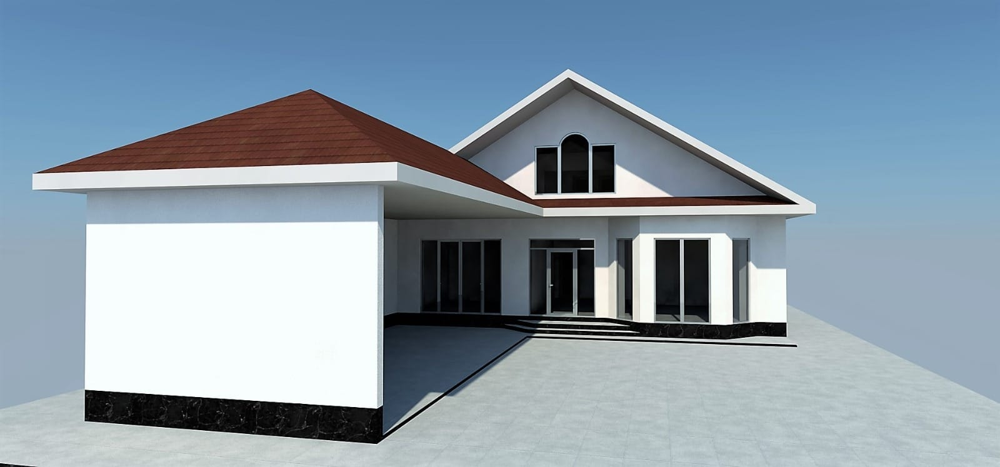
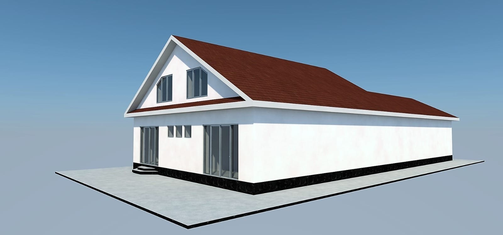
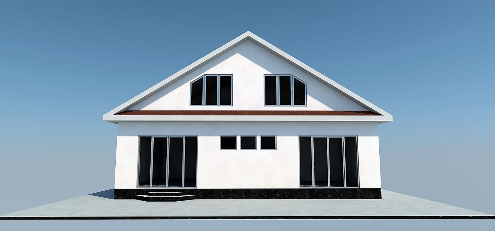
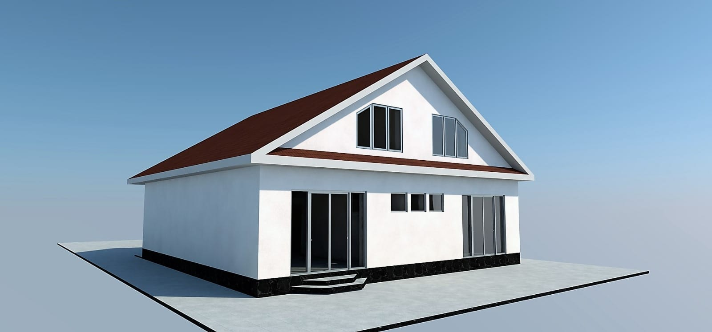
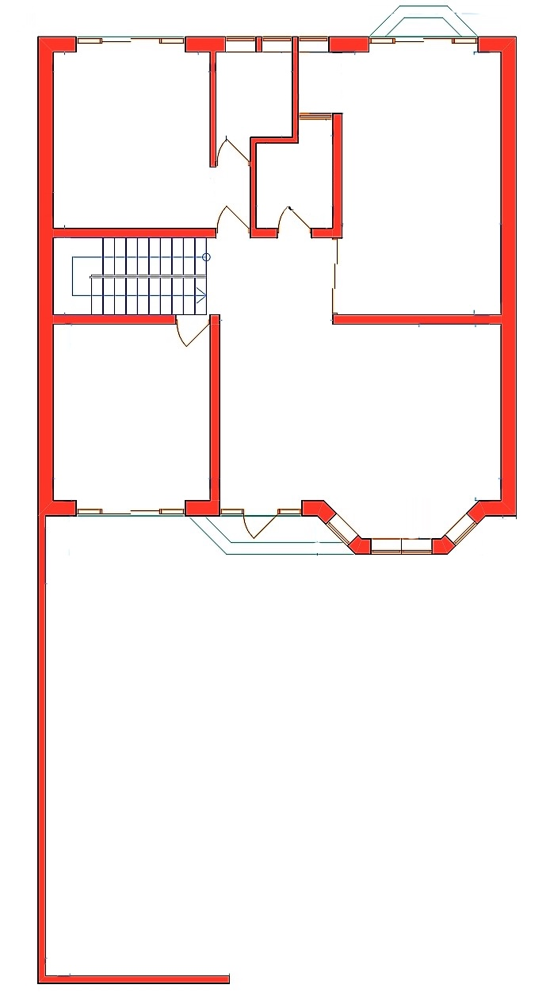
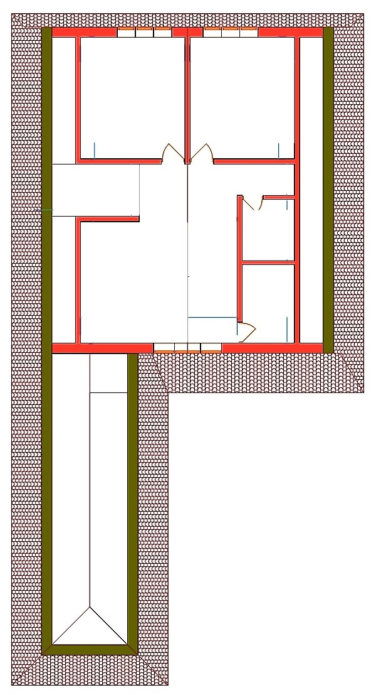
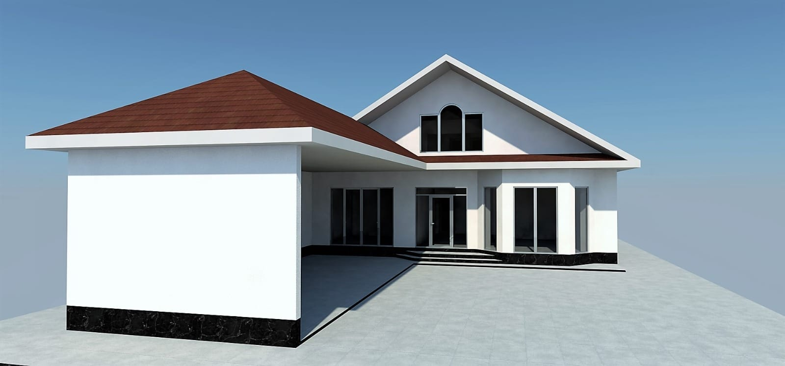
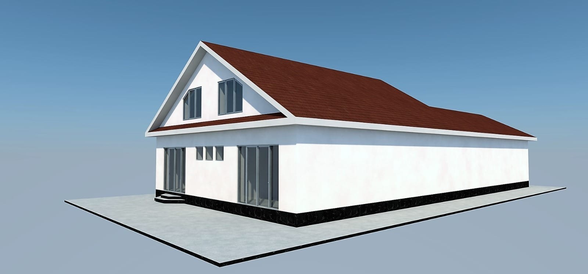
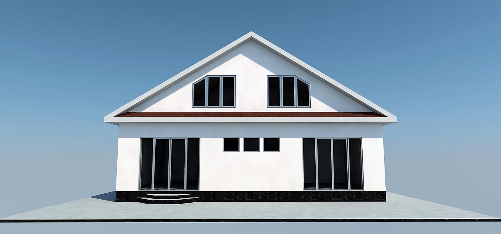
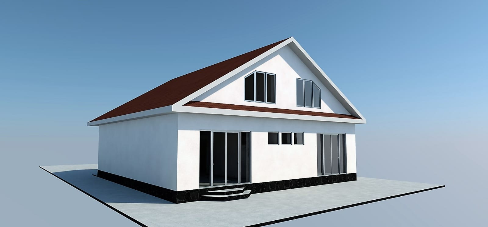
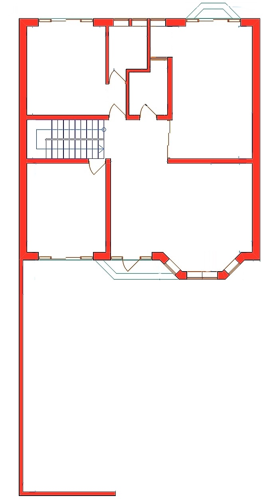
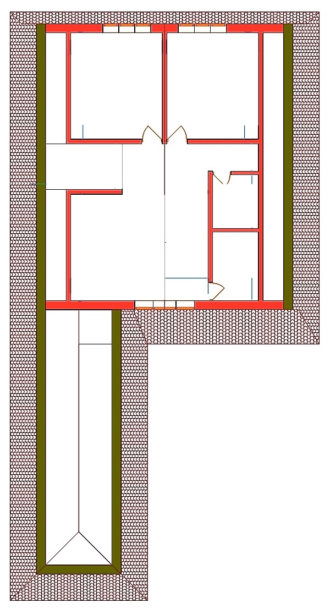
Статусная резиденция с панорамным эркером и большой крытой парковкой
Этот великолепный двухэтажный дом сочетает в себе торжественность классической архитектуры и современные решения для комфорта. Белоснежный фасад эффектно контрастирует с темной кровлей и деревянными рамами панорамных окон. Уникальной чертой проекта является полукруглый застекленный эркер и балкон, создающие выразительный и запоминающийся облик здания.
Первый этаж — Простор и свет:
- Гостиная зона: Сердцем дома является огромный гостиный зал с изогнутой внешней стеной и панорамным остеклением, которое наполняет пространство светом и воздухом.
- Кухня: Просторная кухня-столовая (около 28 м²) имеет удобную квадратную форму, позволяющую легко зонировать пространство для готовки и семейных ужинов.
- Дополнительная комната: На этаже расположена изолированная спальня, которая идеально подойдет для гостей или пожилых членов семьи.
- Хозблок: Предусмотрена отдельная котельная и полноценная ванная комната.
- Парковка: Справа к дому примыкает капитальный навес внушительных размеров, где свободно разместятся два автомобиля или катер.
Второй этаж — Приватная зона отдыха:
- Холл-гостиная: Поднявшись по лестнице, вы попадаете в просторную гостевую зону (холл) площадью около 30 м². Это идеальное место для второй гостиной, библиотеки или игровой.
- Балкон: Из холла есть выход на изящный полукруглый балкон, повторяющий архитектурный рисунок первого этажа.
- Спальни: Две большие спальни (примерно по 18 м² каждая) обеспечивают личное пространство для хозяев.
- Удобства: На этаже имеется отдельная гардеробная комната и большая ванная комната.
Ключевые преимущества проекта:
- Эффектная архитектура: Полукруглый эркер и балкон придают дому премиальный вид.
- Функциональность: 3 полноценные спальни + 2 большие гостиные зоны (на 1 и 2 этажах).
- Хранение: Наличие гардеробной и котельной.
Этот дом — идеальное решение для семьи, которая ценит простор, свет и рациональное использование каждого квадратного метра.